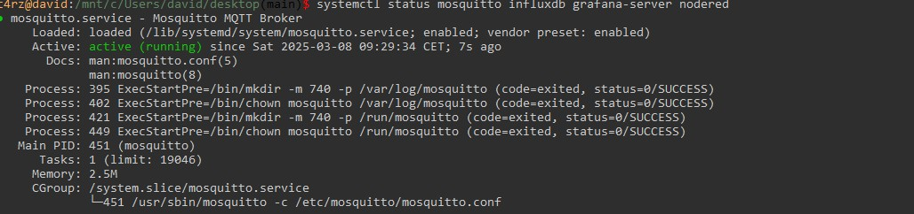
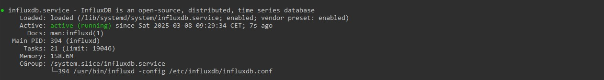
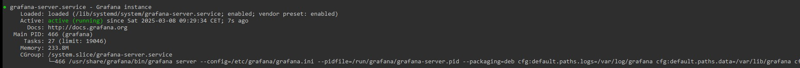
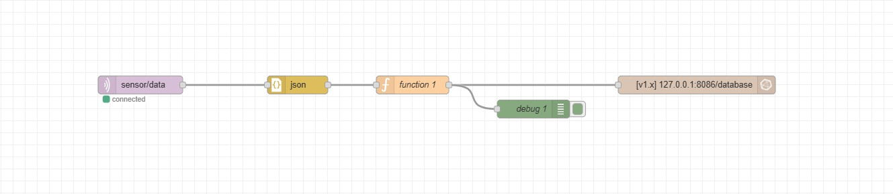
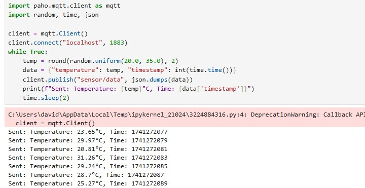
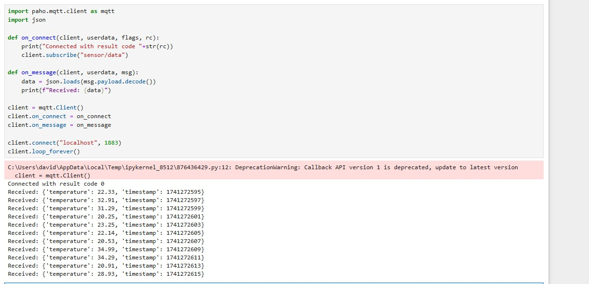
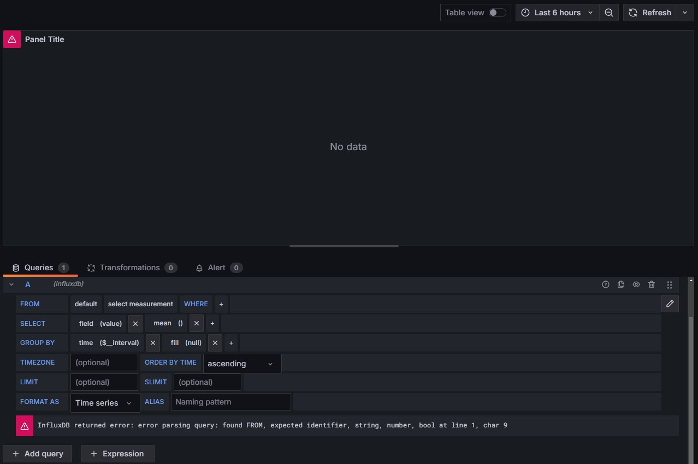
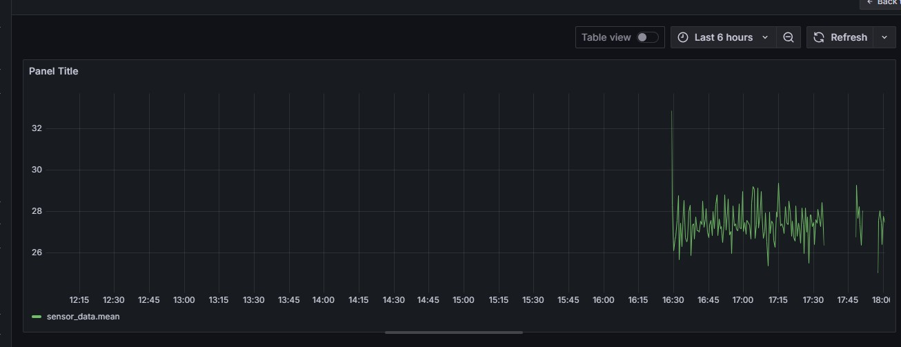
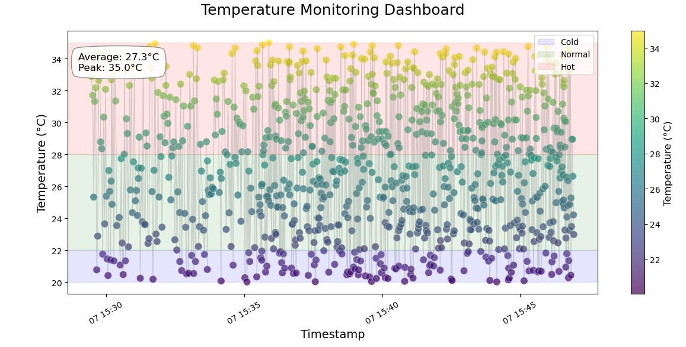
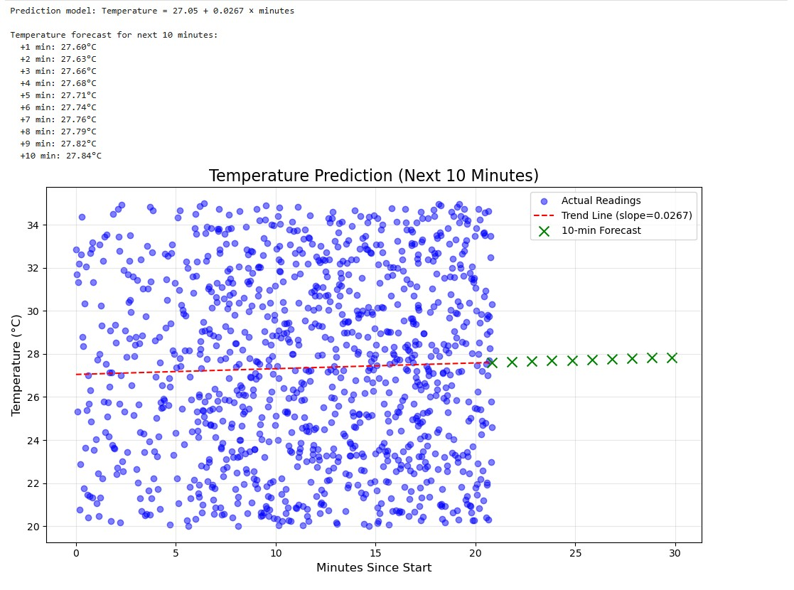

As a warmup project, this IoT Data Monitoring System is a short and straightforward implementation compared to more complex projects like Solana Insiders Trading. It integrates MQTT, InfluxDB, Grafana, and Jupyter Notebook to collect, store, visualize, and analyze data efficiently.
The system simulates temperature data, transmitted via MQTT, stored in InfluxDB, displayed live in Grafana, and analyzed using Jupyter Notebook. This setup provides a scalable foundation for real-world monitoring applications.
Such a system is applicable in domains like industrial automation, smart homes, and precision agriculture, where timely data insights are critical.
These tools were chosen for their robustness and widespread use in IoT and data engineering.
The environment was configured on Windows using WSL, leveraging the following tools:
Each component handles a specific stage of the data pipeline.
  
InfluxDB was configured to store sensor data. Using the commands CREATE DATABASE iot_data and SHOW DATABASES, I established a database optimized for time-series data.
Node-RED was used to create a data flow: an MQTT input node subscribes to the topic, a function node parses JSON, and an InfluxDB node stores the data. Its intuitive interface simplifies system adjustments.
A Python script in Jupyter Notebook simulates a temperature sensor, generating random values (20–35°C) every 2 seconds and publishing them via MQTT. This tests the system without hardware.
A verification script in Jupyter Notebook queried InfluxDB, retrieving a table of temperatures and timestamps to confirm successful data storage.
Grafana was configured with a dashboard to display temperature data in real time, offering clear insights into trends and changes.
Mosquitto, InfluxDB, Node-RED, and Grafana were launched concurrently. Data flowed seamlessly from the generator to the dashboard, validating system functionality.
In Jupyter Notebook, I performed statistical analysis (e.g., averages) and generated visualizations like line charts and histograms to interpret the data.
A basic predictive model in Jupyter Notebook forecasted future temperature values based on historical data, enabling proactive issue detection.
During development, I resolved several issues:
| Problem | Solution |
|---|---|
| Mosquitto wouldn’t start | Checked port conflicts with netstat -an |
| No data in Node-RED | Added a debug node to trace the flow |
| Node-RED function node errors | Corrected JavaScript and redeployed |
| JSON format issues | Adjusted node to extract temperature correctly |
| Data missing in Grafana | Verified InfluxDB structure and fixed query |
| Nested JSON in InfluxDB | Simplified Node-RED flow to flat values |
These commands aided in monitoring and debugging:
# Check port usage
netstat -an | findstr "1883 8086 3000 1880"
# Open InfluxDB console
influx
This project showcases the integration of IoT technologies for effective data monitoring. It could be adapted for:
Future enhancements, such as real sensors or automated alerts, could further increase its utility.
For more details or to explore the code, visit my GitHub repository or contact me at david.dylag@example.com. I’m open to discussing this project or other technical topics.